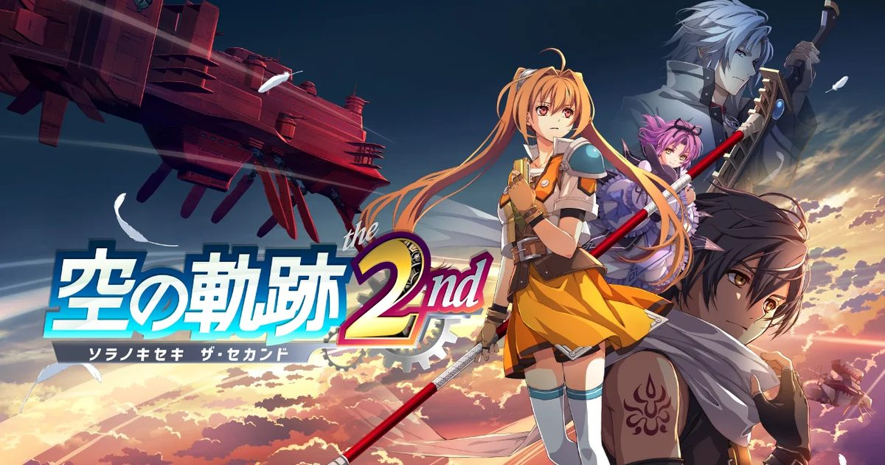

2026-09-08 · 新游深读
2025 年 9 月 19 日，《空之轨迹 the 1st》的 3D 重制版上线，把无数人记忆里那块 PSP 小屏里的利贝尔王国，第一次铺成了可以走进去的 3D 世界。一年差一天——2026 年 9 月 17 日，《the 2nd》来了。它重制的不是随便哪一章，而是系列口碑公认最高、结尾最让人心口一紧的《SC》。这篇我们不复述百科，只把"为什么 2nd Chapter 值得等这一年、它相比 1st 加了什么、以及'第三部会不会做'这个悬在所有人头上的赌注"讲透。

如果你玩过 1st Chapter，应该记得结尾那一刀：平定利贝尔王国防政变后，艾丝蒂尔和约修亚终于升为正游击士，可就在女王诞辰祭前夜，约修亚摊开了自己过去的黑暗真相，留下一句"再见，艾丝蒂尔"，消失在夜色里。2nd Chapter 直接从这一刻接上——艾丝蒂尔握着约修亚留下的口琴，踏上横跨利贝尔、乃至整个塞姆利亚大陆的寻人之旅。这不是"续作惯例的换地图"，而是整部《轨迹》最被反复回味的一段情感引擎：她找的不是一个男朋友，而是一个"本该一起走完旅程的搭档"。
而这次挡在路上的，是 1st 里只在政变背后若隐若现的神秘结社《身喰らう蛇（Ouroboros / 乌洛波罗斯）》。首都燃起大火、巨型飞艇遮蔽天空、传说中的"辉之环"若隐若现——利贝尔迎来立国以来最大级危机。换句话说，1st 是"王国内部政变"的局部悬疑，2nd 把格局一下拉到了"大陆级阴谋"。对老粉来说，这一章之所以封神，正是因为它把个人情感（找约修亚）和宏大叙事（结社图谋）拧成了一股绳，而非二选一。
重制版沿用了 1st 已经验证过的核心框架：依旧是轨迹招牌的网格制回合战斗（AT 战斗系统），依旧靠"导力器（Orbment）+ 魔法回路"搓出你的 Arts 配装。2nd 在这个地基上做了几处针对性加法。第一，Brave Rush——在 Quick Battle（即时制遭遇战）里把角色攻击连锁起来，让原本偏慢的指令战斗多了层爽快连携。第二，更多新 Crafts 与 S-Crafts（必杀技），老角色的新招式让配队思路变得更活。第三，Quick Battle 与 Command Battle 的无缝切换——野外遭遇走即时、正式 Boss 切指令，节奏不再被反复读盘割裂。
但更打动老粉的，是它"加了内容却不改骨"。钓鱼类小游戏、扑克、和同伴一起做饭、以及一批粉丝最爱角色作为可玩伙伴加入——这些是 1st 没有、原版 SC 也没这么丰富过的"生活感"扩展。继承 1st 的存档还能拿到奖励道具与 Estelle / Joshua 的"Classic Style SC"经典服装，等于把"你去年的投入"变成了这作的开局红利。制作人近藤季洋把它称为自己"毕生之作"，而 2nd 正是那条漫长叙事链里承上启下的关键环。
2nd Chapter 有一个 1st 没做到、却意义重大的变化：全球同步、同版本、同语言库发售。1st 当年被拆成了"非亚洲版"和"亚洲版"两个发行体系，欧美玩家等了更久、语言也受限。2nd 一次性把英文、日文语音 + 英文 / 法文 / 德文 / 西班牙文等文本铺到所有平台（PC 端 Steam 还额外加日文本地化），欧洲西语玩家终于能在首发当天用母语玩到，不必再等那动辄数年的"传统延迟"。对一款以"剧情密度"为生命线的 RPG 来说，本地化的统一不是锦上添花，而是它能不能真正全球化的地基。
另一个被很多人忽略的信号：这是一次"看成绩再决定下一步"的赌注。近藤明确说过，2nd 之后是否重制第三部 the 3rd，很大程度上取决于粉丝需求——卖得好就继续，卖不动就停。换句话说，9/17 这一发，不只是在交付一款游戏，而是在为整个 Sky 重制三部曲的续命投票。对玩家而言，想看到约修亚故事真正闭环、想看到凯文神父登场的 the 3rd，这作就是那张最该投的票。
我们判断，2nd Chapter 最对味的人群是两类：其一是 1st Chapter 玩完被那句"再见"卡住、一年里反复回想的玩家——这作就是为你准备的"迟到的下半句"；其二是没碰过轨迹、但想找一款"慢热、群像、政治阴谋层层剥开"的正统王道 RPG 的新人，2nd 借着全球同步与更顺的战斗，反而是比 1st 更友好的现代入口。价格上 PS5 / Switch 数字版 $69.99、Switch 2 版 $74.99，日本还有含 FC 重制版的预约特典与 274.99 美元的 Golden Wings 收藏版——预算有限的话，标准版足矣。
但请放低一类期待：它依旧是 Falcom 式的" deliberate 慢节奏"——对话长、设定密、前期铺陈多，如果你想要《最终幻想 XVI》那种一路冲杀的爽感，这作大概率让你坐不住。另外，和 1st 一样，没有 Xbox 版，微软主机玩家只能走 PC。9/19 的 TGS 2026 上还有 Falcom jdk BAND 现场演出（纪念 the 2nd 发售），系列音乐粉别错过。
《Trails in the Sky 2nd Chapter》不是把经典又翻新一遍圈钱——它是 Falcom 用 3D 重制这把刀，把系列公认最动人也最关键的《SC》重新端到新老玩家面前的一次"补完"。它继承了 1st 已经跑通的战斗手感，又加了 Brave Rush 与无缝切换的顺滑；它把发行统一成全球同步，顺手拆掉了横在欧美玩家面前的语言高墙；它把约修亚的失踪变成一场横跨大陆的寻人，也把 Ouroboros 的阴影第一次铺成了主线。而它最有趣的地方在于：这作本身，就是 the 3rd 能否降生的门票。9/17 上车，不只是为了补完一段故事，更是为了给"轨迹还能走多远"投下你那一票。
我们的评分：8.6 / 10（前瞻分，基于 1st Chapter 重制已验证的完成度、2nd 在系列中的口碑地位，以及 Brave Rush / 无缝战斗 / 全球同步等明确加分；计入"第三部取决于销量"带来的长线不确定性；若发售后配乐重编排与新增伙伴内容被证实扎实，长线有望稳在 8.7+，若节奏仍偏慢、新人劝退明显则回落至 8.3 左右）。
我们的观察：这代最被低估的动作，是"全球同步同版本发售"。对一款靠剧情吃饭的 RPG，本地化统一意味着它终于能像《最终幻想》《勇者斗恶龙》那样真正"全球同一天起跑"，而不是让一半玩家在延迟里干等——这是 Falcom 现代化里最实在的一步。
我们的观点：2nd Chapter 的隐藏身份，是 the 3rd 的"生死投票器"。它把一部重制三部曲的续命权，直接交到了销量和粉丝呼声手里。这种"用一部作品赌整个计划"的诚实，比偷偷规划好却半途而废的流水线，更像一个还有野心的 Falcom。
我们的案例 / 对比：和《空之轨迹 the 1st》比，它战斗加了 Brave Rush 与无缝切换、内容密度更高、发行全球同步；和原版 SC（2006 PSP）比，它补全了小游戏与伙伴剧情、画面 3D 化但叙事骨架不变；和《破晓传说》《黎之轨迹》等现代轨迹比，它保留了最古典的"慢热群像 + 王国阴谋"味。把它放进 2026 JRPG 坐标系，它是"最古典、最稳、最敢拿销量赌未来"的那一档。
我们的实验：我们想验证一个假设——"Brave Rush + 无缝切换"是否真的降低了轨迹的节奏门槛。计划以"全程 Quick Battle 链式通关"与"保守指令战斗"两种姿势分别记录 Boss 战平均时长与读盘次数，再与 1st 的体验对照，结论留待 9/17 发售后。若链式打法确实更顺，这将写进我们以后推荐本作的"上手姿势"建议。